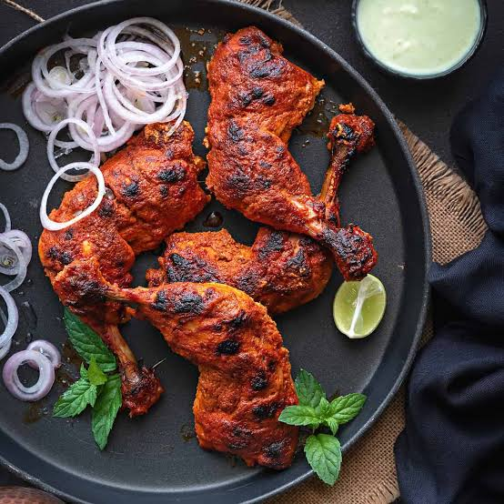

Indian Cuisine
Tandoori Chicken
Tender and flavorful chicken marinated in a blend of yogurt and spices, then grilled to perfection.

Instructions
- Combine the coconut milk, oil, lemon juice, garlic, ginger and all of the spices.
- Thoroughly coat the chicken in the marinade. Refrigerate for at least 1 hour, ideally 4–8 hours. Overnight also works.
- Heat the oven to 450°F. Line a sheet pan with foil and place a wire rack over it. Lightly oil the rack.
- Remove each thigh from the marinade and let the excess drip off. Don't wipe the marinade away, but don't pour the remaining marinade onto the pan.
- Arrange the thighs with space between them and roast at 450°F for 18–24 minutes.
- Chicken is safe at 165°F, but thighs become especially tender around 175–185°F.
- Switch the oven to HIGH BROIL. Place the chicken about 5–7 inches below the broiler and broil for 2–4 minutes, watching closely. You're looking for dark, charred spots around the edges.